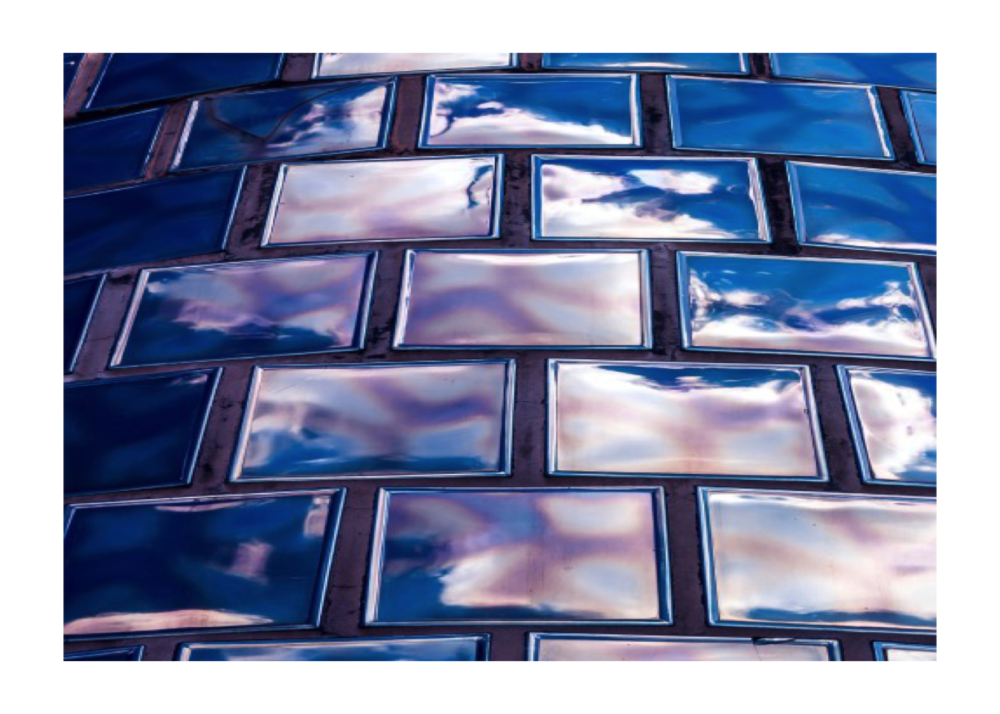
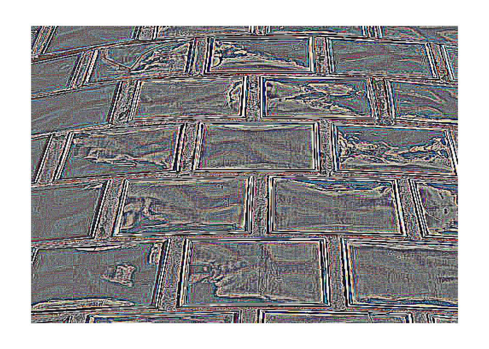
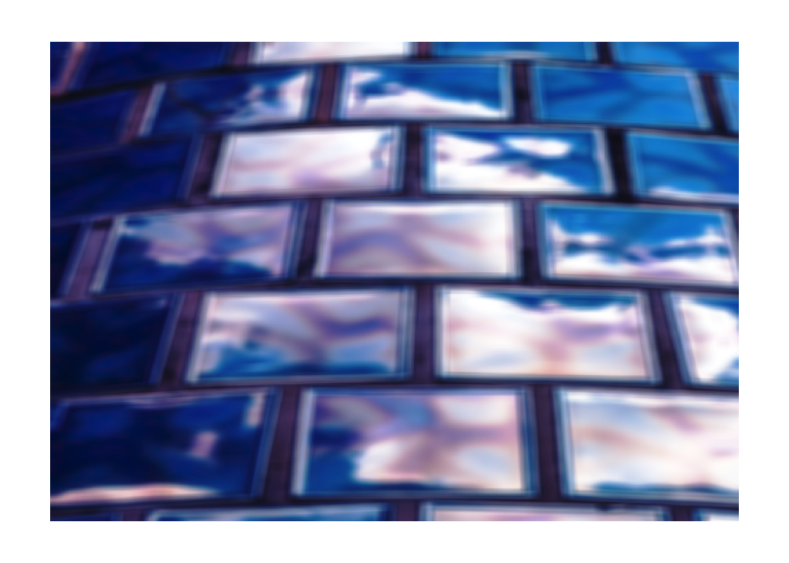
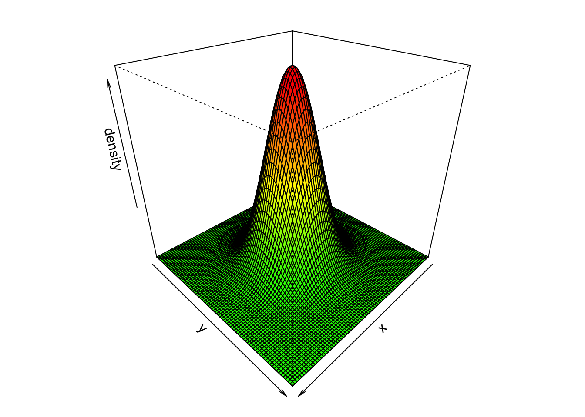

library(jpeg)
set.seed(123)Kernel convolutions from scratch
R
Notebook for self-learning and playing with convolution matrices and applying them to raster inmages. All convolutions and matrices calculated and performed using base R.
Loading the image
Reading the image from a jpg file into a raster array. The image is loaded into an array of (500, 500, 3).
# Reading the sample image
img <- readJPEG("wall.jpg", native = FALSE)
dim(img)[1] 500 500 3Plotting the the raster image.
plotting function
plot_raster <- function(raster) {
par(mfrow = c(1,1), mar = c(1,1,1,1))
plot.new()
as.raster(raster) |>
rasterImage(xleft = 0, xright = 1, ytop = 0, ybottom = 1)
}plot_raster(img)
Convolving kernel
The convolution can be expressed as \[ g(x,y) = M \cdot f(x,y) = \sum_{dx=-a}^{a} \sum_{dy=-b}^{b} M(dx, dy) f(x-dx, y-dy) \]
That is, we calculate a new value for each pixel using the product of the convolution kernel and matrix of the same dimension from array f, in a rolling basis.
However, the edge pixels might cause problems when using a large kernel, as there are no adjacent pixels. This can be handled by edge padding.
Extended edge padding
In order to calculate convolutions also for the edge pixels, we can extend the edges by repeating edge values indefinitely.

The following function repeats the edge pixels of a given matrix for a specified mount of times.
edge_extension <- function(mat, pad) {
n <- nrow(mat)
m <- ncol(mat)
top <- c(rep(mat[1,1], pad), mat[1,], rep(mat[1,m], pad))
bot <- c(rep(mat[n,1], pad), mat[n,], rep(mat[n,m], pad))
left <- matrix(rep(mat[1:n, 1], pad), ncol=pad)
right <- matrix(rep(mat[1:n, m], pad), ncol=pad)
mid <- cbind(left, mat[1:n,], right)
new_mat <- rbind(
matrix(rep(top, pad), nrow=pad, byrow=TRUE),
mid,
matrix(rep(bot, pad), nrow=pad, byrow=TRUE)
)
return(new_mat)
}The function in action when given a following 3x3 matrix as input \[
\begin{bmatrix}
1 & 2 & 3 \\
4 & 5 & 6 \\
7 & 8 & 9
\end{bmatrix}
\]
edge_extension(matrix(1:9, ncol=3, byrow=T), pad=2) |>
write.table(row.names=F, col.names=F)1 1 1 2 3 3 3
1 1 1 2 3 3 3
1 1 1 2 3 3 3
4 4 4 5 6 6 6
7 7 7 8 9 9 9
7 7 7 8 9 9 9
7 7 7 8 9 9 9Applying the function
The following function calculates the rolling kernel using edge extension
rolling_kernel <- function(f, M) {
x <- ncol(f)
y <- nrow(f)
m <- ncol(M)
n <- nrow(M)
g <- f # g(x,y)
# Kernel dimensions exceed the source
if (m > x || n > y) {
stop("Kernel length exceeds the source")
}
g_extended <- edge_extension(f, (m-1))
for (i in 1:x) {
for (j in 1:y) {
f_kernel <- g_extended[i:(i+(m-1)), j:(j+(n-1))]
g_kernel <- f_kernel * M
g[i, j] <- sum(g_kernel)
}
}
return(g)
}A main wrapper function that convolves the given kernel for all three channels of an RGB-image. We have to also scale the values into [0,1] by computing \(\frac{\mathrm{rank}(A_{m \times n})}{m \cdot n}\).
rgb_kernel <- function(raster, kernel) {
channels <- dim(raster)[3]
output <- raster
for (ch in 1:channels) {
output[,,ch] <- rolling_kernel(raster[,,ch], kernel)
}
# Scaling
output_reshape <- matrix(output, nrow = ncol(raster))
output_scaled <- rank(output_reshape) / length(output_reshape)
dim(output_scaled) <- c(dim(raster))
return(output_scaled)
}Testing out common kernels
# Sharpen
img |>
rgb_kernel(matrix(c(0,-1,0,-1,5,-1,0,-1,0), nrow=3)) |>
plot_raster()# Edge detection
img |>
rgb_kernel(matrix(c(-1,-1,-1,-1,8,-1,-1,-1,-1), nrow=3)) |>
plot_raster()
# Box blur
img |>
rgb_kernel(matrix(rep(1, 81), nrow=9)) |>
plot_raster()
2-D Gaussian kernel
Gaussian blur can be applied by running a convolution using a Gaussian kernel. The two-dimensional Guaissian kernel is defined as \[ G(x,y) = \frac{1}{2 \pi \sigma ^2} e^{- \frac{x^2 + y^2}{2 \sigma ^2}} \]
Using the CDF of normal distribution, we can calculate the convolution matrix by
Generating a linspace \(u = \texttt{linspace}[\texttt{a}, \texttt{b}] \in \mathbb{R}^n\)
Using \(u\) to draw values from the Gaussian \(\texttt{CDF}\)
Calculating the convolution matrix \(M\) by taking the outer product \(M = uu^\top \in \mathbb{R}^{n \times n}\)
# Gaussian kernel function
gaussian_kernel <- function(width, sigma = 1) {
if (width%%2 != 1) { stop("Even width parameter") }
# Boundaries
b <- (width-1)/2
a <- -b
# Setting up the linspace
ax <- seq(a, b, length = width)
# Draw from gaussian CDF
u <- dnorm(ax, sd = sigma)
# Outer product uu^T and normalization
M <- u %o% u
M <- M / sum(M)
return(M)
}Plotting an example convolution matrix using width = 81 and sigma = 10.
Calculating color values for the plot
# Modified from: https://stackoverflow.com/a/39118422
z <- gaussian_kernel(width = 81, sigma = 10)
colors <- colorRampPalette(c("green", "yellow", "red"))(100)
z.facet.range <- ((z[-1, -1] +
z[-1, -ncol(z)] +
z[-nrow(z), -1] +
z[-nrow(z), -ncol(z)]) / 4) |>
cut(100)# Preparing the variables
M <- gaussian_kernel(width = 81, sigma = 10)
x <- y <- seq(-40, 40, length = 81)
# Plotting the 3D surface
par(mfrow = c(1,1), mar = c(1,1,1,1))
persp(x, y, M,
theta = 135, phi = 30,
zlab = "density",
col = colors[z.facet.range]
)
Gaussian blurring
Finally, convolving the gaussian kernel and applying a Gaussian Blurof radius: 40 and sd: 10.
# Gaussian blur
img |>
rgb_kernel(gaussian_kernel(width = 81, sigma = 10)) |>
plot_raster()References
Michael, Plotke. 2013. Image Kernel Convolution, Extend Edge-Handling. Wikipedia. https://en.wikipedia.org/wiki/File:Extend_Edge-Handling.png.
{kind=link}